PriorR is a filtering and prioritization program of disease-linked genetic variants developed within the Bioinformatics Unit of the Genetics and Genomics Department, IIS-Fundación Jiménez Díaz. It opens variant tables already annotated (SNVs / indels of exomes, genomes or gene panels, and CNVs annotated with AnnotSV) and offers, in a graphical interface, the filters and functions used in the daily analysis: population frequencies, pathogenicity predictors, virtual gene panels, phenotypes (HPO), inheritance patterns and trios, prioritization of variants and genes (GLOWgenes), ACMG criteria, comments and classifications shared by the lab, and the reads of each variant.
http://127.0.0.1:8484.library/ folder of PriorR, nothing is installed in the system).Installers: PriorR-4.0-setup.exe (Windows) and PriorR-4.0.pkg (macOS) are wizards that install
PriorR for the user (no administrator needed) and add a PriorR icon; the Windows one asks for the shared folder of the lab.
R must be installed first (the installers say so when it is missing). They are not signed: Windows shows "Windows protected
your PC" (More info > Run anyway) and macOS needs right click > Open the first time.
Without installers: copy the PriorR folder to a place every computer can reach (a network folder) or to each computer, and start it with:
| System | How to start PriorR |
|---|---|
| Windows | double click PriorR.bat |
| macOS | double click PriorR.command |
| Linux | ./priorr.sh |
PriorR opens in the web browser (a random local port); closing the console window stops it. It can also run as a server (Dockerfile in the repository) for labs that prefer one shared installation.
The lab data (users, groups, comments, classifications, profiles, saved panels, analysis rounds, GLOWgenes
rankings) live in a shared folder. It is set in priorr.cfg next to launch.R
(configuration of the lab; commented example in priorr.cfg.example) or, for one computer, in the
configuration of that computer. When nothing says where the shared folder is, the first start shows a short
setup wizard that asks for it.
shared_folder: //server/genetics/priorr data_folders: Exomes=//server/exomes; Genomes=//server/genomes genome_build: GRCh38 memory_limit: 8GB threads: 4 max_rows: 2000000
The first time a shared folder is used, PriorR asks for the first administrator (fig. 1). Afterwards each user signs in once per computer (Remember me).
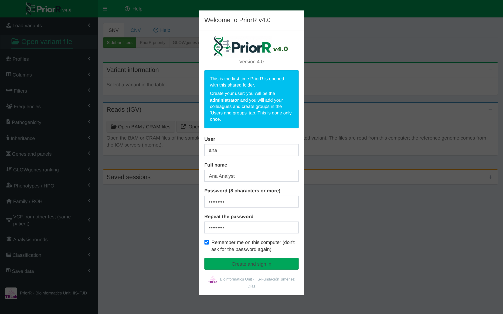
CHROM POS REF ALT,
SYMBOL, Consequence, frequencies (gnomADg_AF, gnomADg_AF_popmax...),
CLNSIG, predictors (CADD_PHRED, REVELScore, SpliceAI_DS_Max...) and,
for each sample, <sample>_GT, _DP, _AD, _VAF. Plain or .gz;
genomes of several GB are fine. Filters only apply to the columns the file has..tsv).Demo data: app/Program_files/examples/demo_trio_synthetic.tsv and demo_cnv_synthetic.tsv
(synthetic, made by scripts/make_demo_data.R).
The header shows the patient of the loaded file (the proband or first sample, with the other samples of the file) and the user (password and sign out). The tabs are SNV, CNV, Users and groups (administrators) and Help. On the left, the sidebar with the filters and functions of the tab; in the centre, the table, the variant information, the reads and the saved sessions (fig. 2).
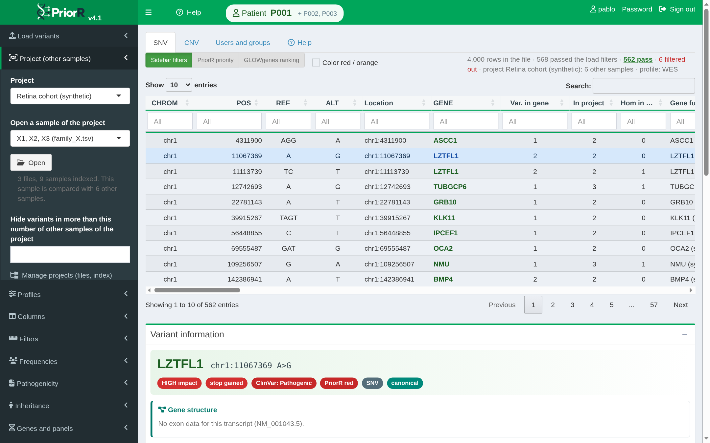
Above the table: the three views (Sidebar filters, PriorR priority and GLOWgenes ranking, the one in use in green),
the rows of the file and those that passed the load filters, and of them how many pass the sidebar filters and how many are
filtered out: click filtered out to see the variants the filters remove (with their details; Back to … that pass returns).
Column headers show SYMBOL as GENE and no underscores; each column has its own filter box; long values are shown in full
on hover or click. Var. in gene (next to GENE) says how many variants of the gene pass the current filters (compound
heterozygotes). Any column can be hidden in Columns and moved by dragging its header; the order is kept in profiles and sessions.
Clicking a header sorts by it, keeping the previous order within equal values; empty allele frequencies (gnomAD, FJD, CSVS) sort as 0.
The column filters, the search and the order are kept when the table changes. Save data downloads the table shown.
Load variants > Open variant file opens the dialog of fig. 3: choose the file (from the folders of the lab; every file of the folder is listed and a file that is not a variant table gives a message), a filtering profile and, if wanted, genes or panels. The load filters decide what is read from the file (essential for genomes); the sidebar filters work afterwards on the loaded variants.
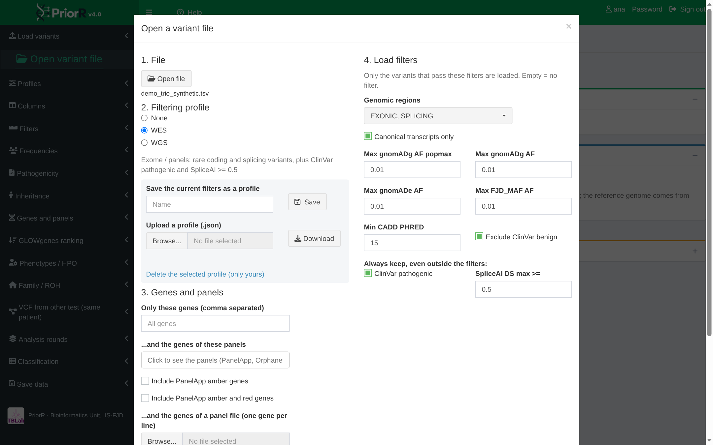
.json); built-in profiles are in app/Program_files/profiles.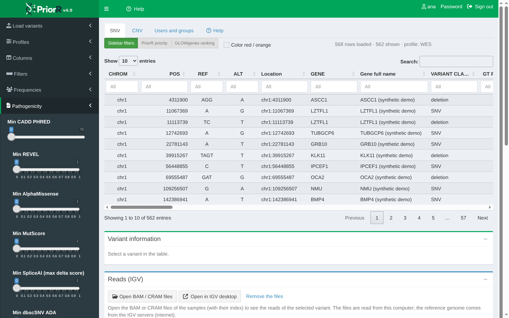
Genes and panels (fig. 5) keeps the variants of your genes and of the chosen panels:
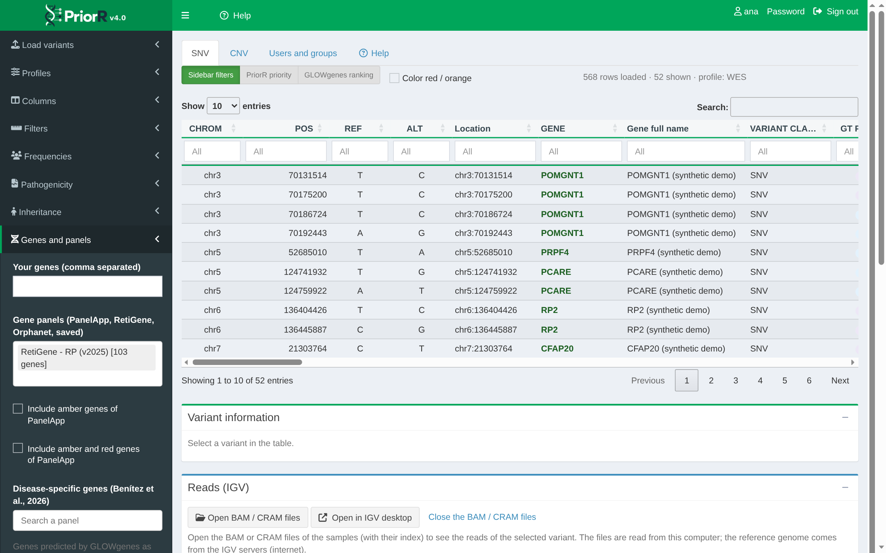
Phenotypes / HPO (fig. 6): choose HPO terms by name or identifier, or paste a list of identifiers
(HP:0000510, HP:0000556). The genes of each term and of its subterms work like one more panel.
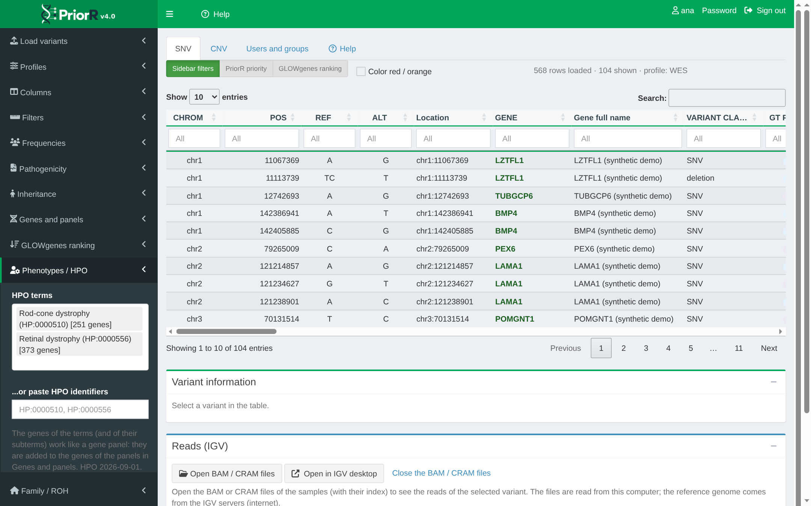
In Family / ROH choose the family: a trio among the samples of the file (proband, sex, father and mother) or a PED file. Then choose the pattern in Inheritance (fig. 7):
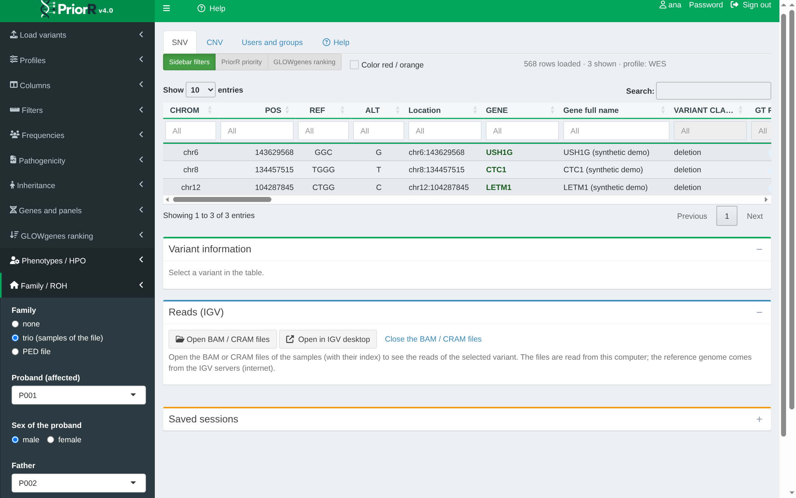
Above the table, the PriorR priority button shows the variants of the sidebar filters with the red ones at the top, then the orange ones, then the rest. In the Sidebar filters view, Color red / orange colors them without changing the order.
A box above the table says how many red and orange variants there are and what they mean:
The GLOWgenes ranking button above the table shows only candidate variants (rare, not benign and with at least one evidence of pathogenicity) ordered by the GLOWgenes rank of their gene: 0 are the genes of the disease panel and then the closest genes in the GLOWgenes networks (fig. 8). Hide panel genes keeps only the new candidates. In the sidebar, Rank the genes with:
GLOWgenes column of the file;tblabfjd/glowgenes,
about 15 minutes); the result is shared with the lab.Only genes up to a GLOWgenes rank limits the rank in both views.
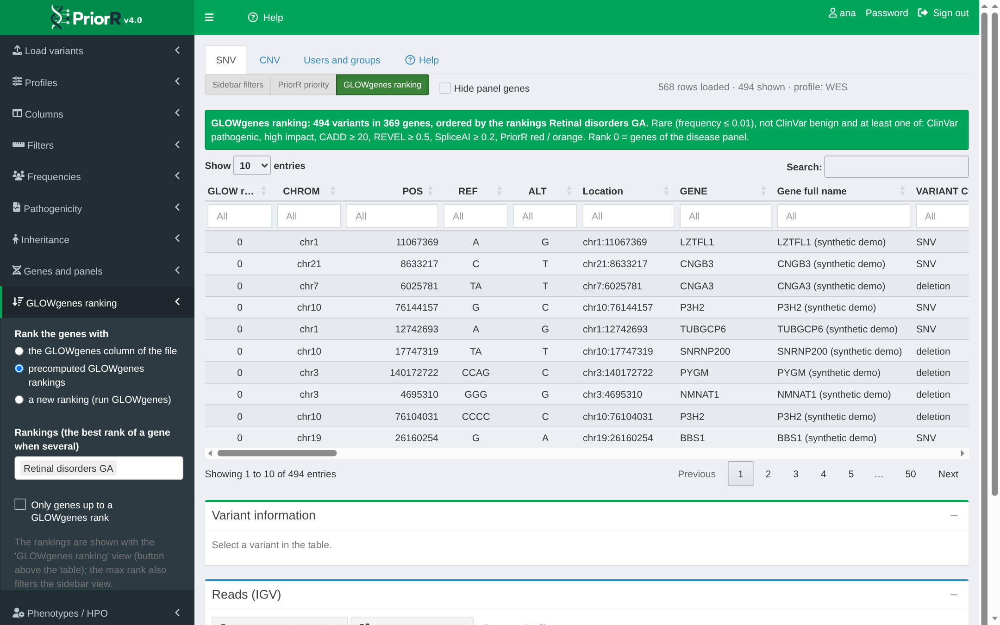
Selecting a row shows (fig. 9): gene, position, impact and ClinVar badges; transcript and HGVS; genotypes of each sample (GT, DP, AD, VAF and variant callers); read depth compared with the whole file; population frequencies; predictors and scores (with AlphaMissense and the gene constraint); OMIM; external links (GeneCards, STRING, OMIM, ClinVar, gnomAD, PanelApp, DECIPHER, GTEx, UniProt, VarSome, SpliceAI Lookup, UCSC...); ACMG criteria and comments.
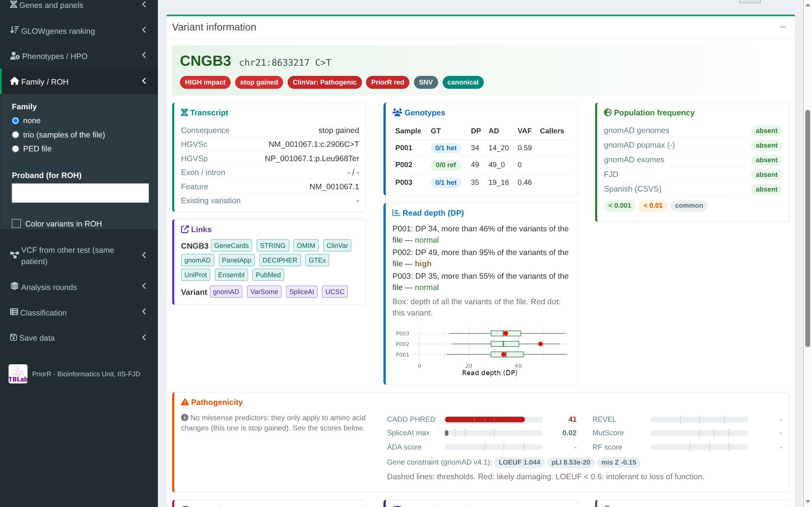
Gene structure (fig. 10) draws the transcript of the row from 5′ to 3′: exons at scale (coding part thicker, UTRs thinner), introns shortened, the variant in red and its exon or intron in orange, with the distance to its borders in bp (useful for splicing). The exons come from the UCSC Genome Browser the first time a transcript is seen (only its name and the position are sent) and are kept in the shared folder; without internet, a schematic drawing with the EXON / INTRON columns.
Gene in panels lists the panels of the library with the gene (PanelApp genes in green, amber or red), whether it is in the genes of the chosen HPO terms, and GLOWgenes and SGDS. Other variants of the gene in this sample lists the other variants of the gene that pass the filters with their genotypes; with a family (trio or PED) it says from which parent each one comes and warns of compound heterozygotes in trans (fig. 11).
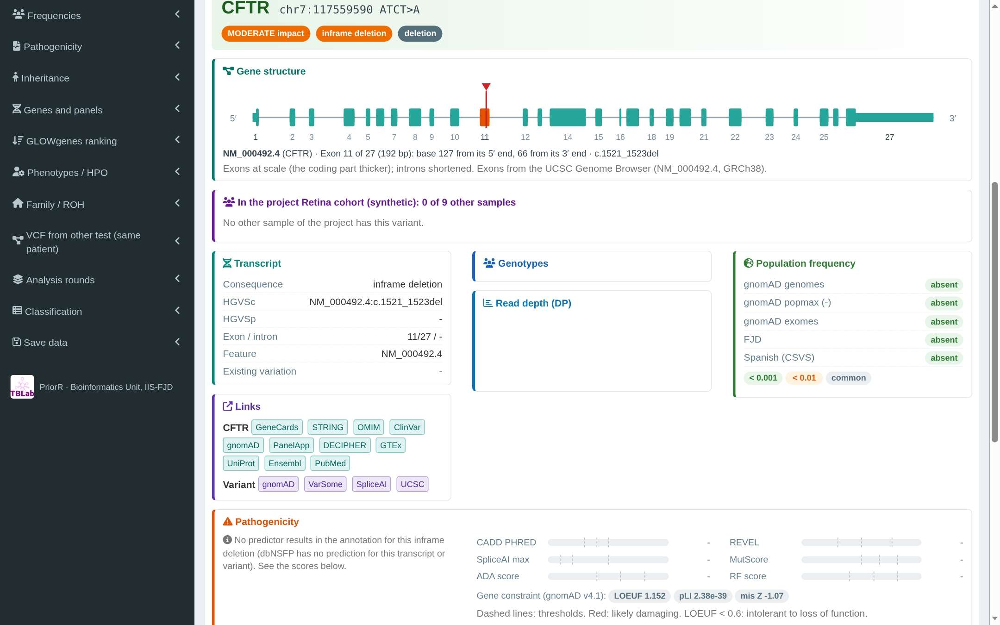
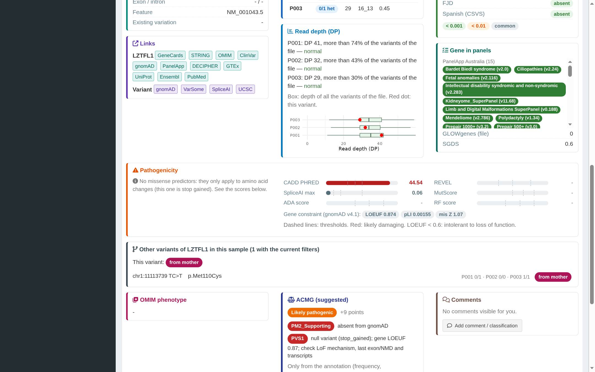
The ACMG (suggested) card (fig. 12) lists the criteria that the annotation supports (ACMG/AMP 2015 with the ClinGen SVI recommendations) with their points and class (Tavtigian et al. 2020): PVS1 (null variant), PM2_Supporting (absent or very rare), PM4, PP3 / BP4 (REVEL thresholds of Pejaver et al. 2022, CADD without REVEL, SpliceAI), BP7, BA1 / BS1 and PM6 (de novo in the trio), PS1 / PM5 (same amino acid change / another missense at the same residue pathogenic in ClinVar, same transcript). They are suggestions: segregation, functional data, phenotype or in trans are added by the analyst.
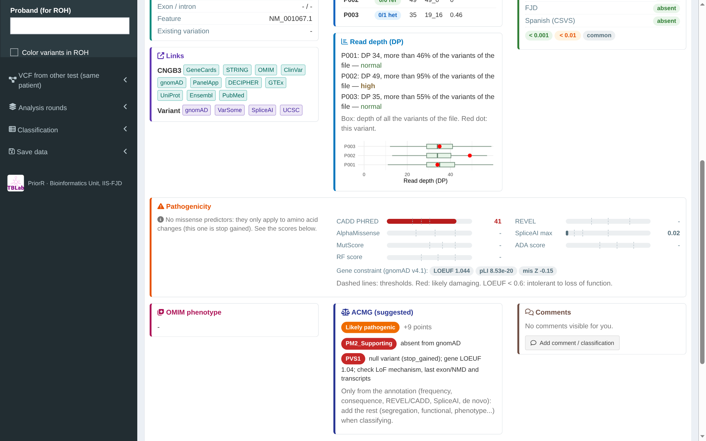
Add comment / classification (fig. 13): classification (Benign ... Pathogenic), ACMG criteria (the suggested ones come chosen: remove, change or add, and the points and class are recalculated), comment and who sees it: all my groups, one group or only me. Classifications belong to the variant (chromosome, position, alleles), so they are seen in every file that has it. Classification > Show classifications and comments adds them to the table.
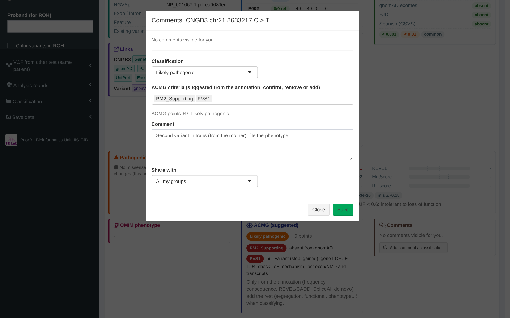
Reanalysis. When a variant is classified, PriorR saves what the annotation said (ClinVar, gnomAD popmax, green PanelApp panels of the gene, ACMG suggestion). When a newer annotation of the patient is opened, a box lists the classified variants that changed (fig. 14); Only classified variants with changes shows only them.
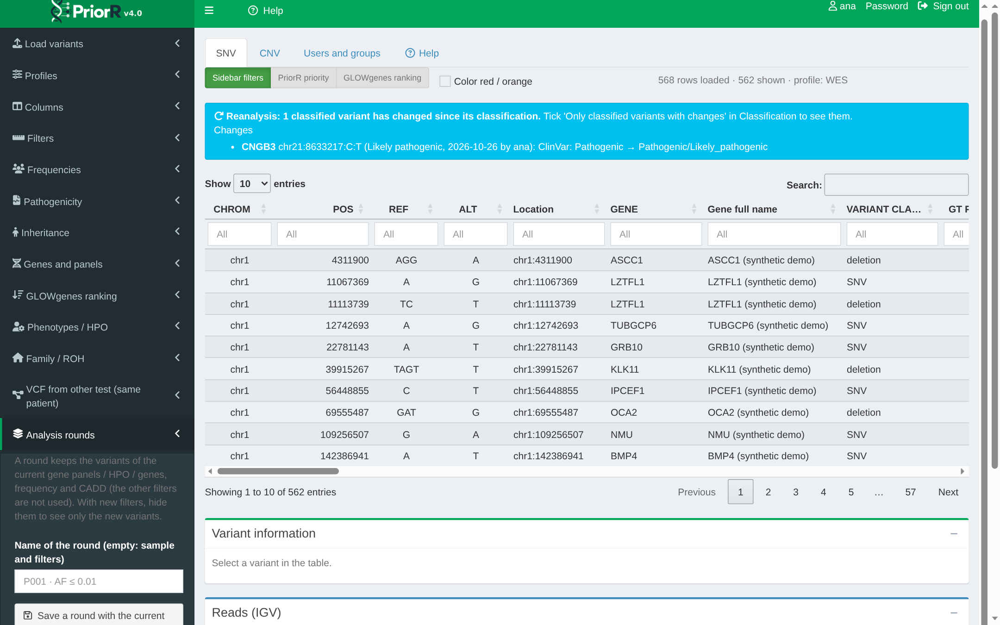
To analyze a genome in steps without reviewing the same variants again: in Analysis rounds, Save a round with the
current panels, frequency and CADD. A round keeps the variants of the current gene panels / HPO / genes, maximum
frequency and minimum CADD (the other filters are not used) and its default name says so (e.g.
P001 · RetiGene - RP (v2025) · AF ≤ 0.01 · CADD ≥ 20). With new filters, tick Hide the variants of previous
rounds to see only new variants (fig. 15). Rounds are saved per user and file and can be deleted.
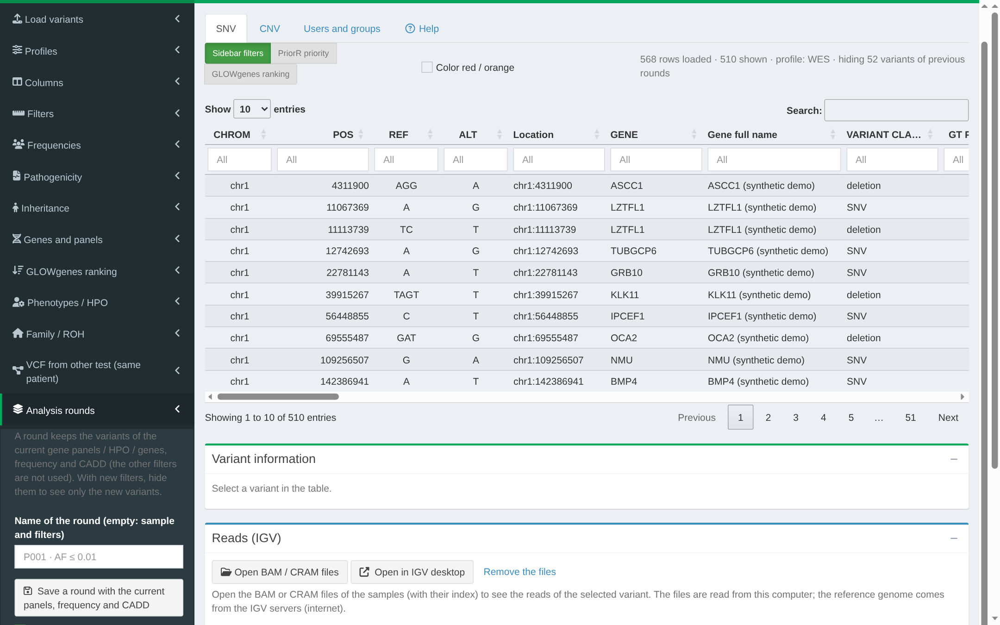
A project groups the variant files of several samples, usually one file per sample (a file with several samples, e.g. a
trio, counts each sample by its <sample>_GT column). In Project (other samples) > Manage projects (fig. 16):
create a project and add its files. Each file is read once in the background and only its variants and genotypes are kept in the
shared folder (a genome takes a few MB); changed files are read again with Index the new files.
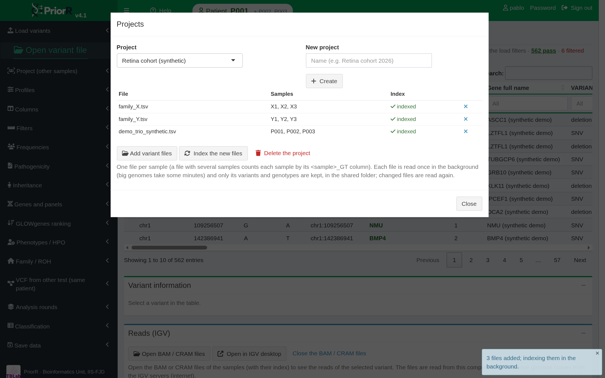
To analyse the samples of a project one after another, choose the project and a sample in Open a sample of the project and click Open: the Open variant file dialog opens with its file chosen. With the project chosen in Project, the table gets In project (other samples with the variant) and Hom in project (of them, homozygous) next to GENE; the samples of the loaded file are not counted. Hide variants in more than this number of other samples removes recurrent artefacts or variants frequent in the population. Variant information lists the other samples with the variant, their genotype and file (fig. 17).
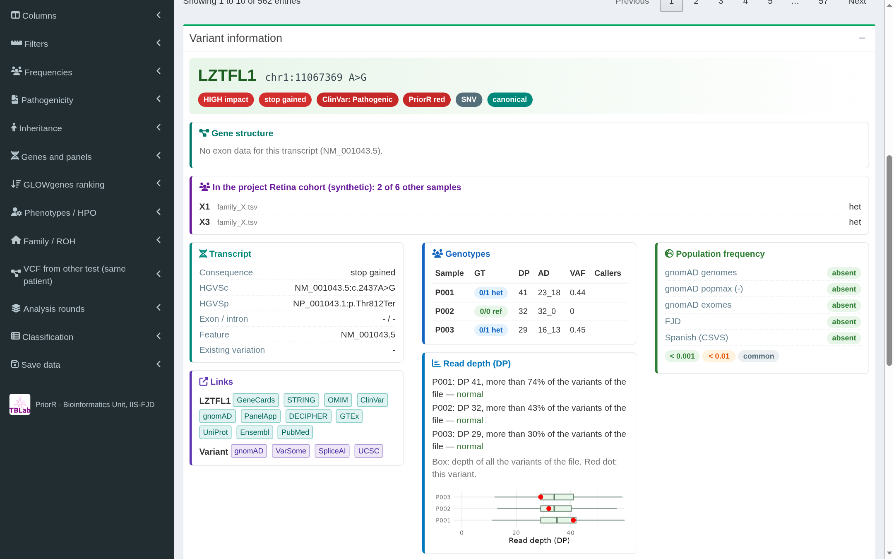
The Reads (IGV) box shows the reads of the selected variant with igv.js: Open BAM / CRAM files (with their
index next to them: X.bam.bai, X.bai, .csi, .crai, also in capitals; each file is assigned to the sample whose name it contains). The files are read
from the computer; the reference genome comes from the IGV servers. Open in IGV desktop sends the files and the position to IGV
(port 60151 enabled). In CNVs, small CNVs are shown whole and big ones by their two breakpoints.
The CNV tab opens AnnotSV files (fig. 18). Filters: samples, annotation mode (full: one row per CNV; split:
one per gene), type, location, minimum ACMG class, number of programs, genes, panels, disease-specific genes, HPO and frequency of
benign gains / losses. GLOWgenes ranking gives each CNV the best rank of its genes (GLOW_rank), to order or limit.
The CNV information shows size, class, genes, known pathogenic CNVs, OMIM / GenCC, constraint and links (fig. 19).
As in the SNVs, the header shows the patient (the sample chosen in Samples), the line above the table counts the CNVs that
pass the filters and those filtered out (of the chosen samples and annotation mode; click to see them) and the columns can
be moved by dragging their header. Gene structure draws in one line the region of the CNV at genomic scale with its genes and exons, the CNV shaded (red for
deletions, blue for duplications) and its exons in that color, and says which exons of each gene it takes (fig. 20).
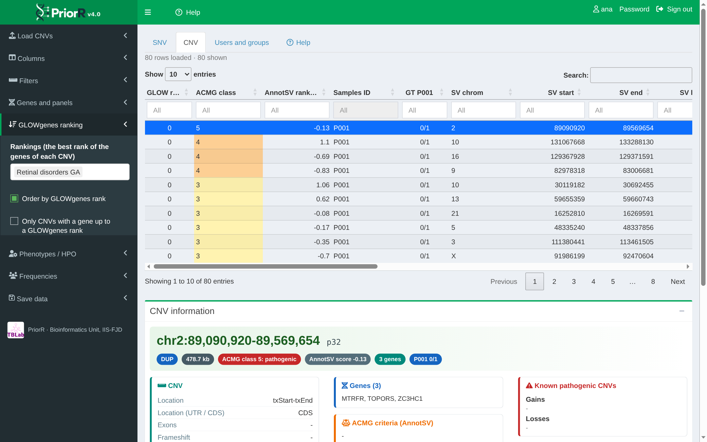
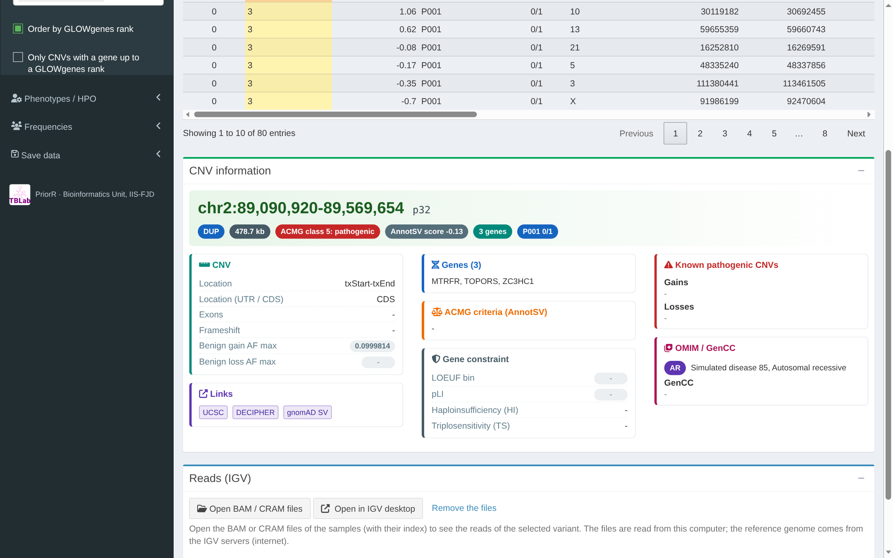
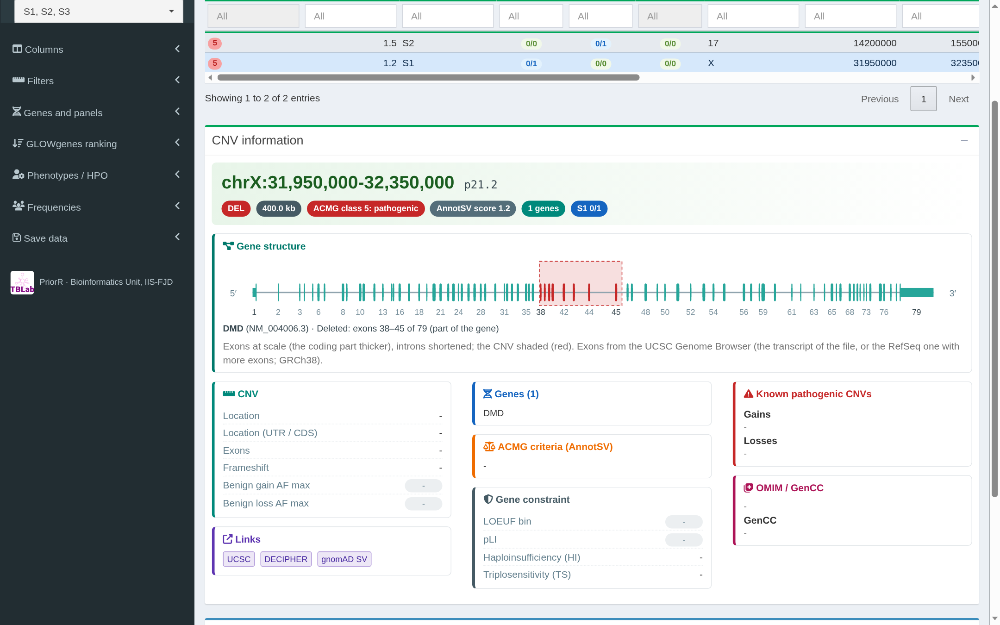
Users and groups (administrators, fig. 21): create users, change passwords, deactivate users, make administrators,
create groups and assign members. Members of a group see the comments shared with their groups. From the command line,
Rscript Program_files/scripts/priorr_admin.R reset-password <user> resets a password.
Saved sessions keeps an analysis (file, profile, filters, columns, BAM files) to open it again later, also from another computer.
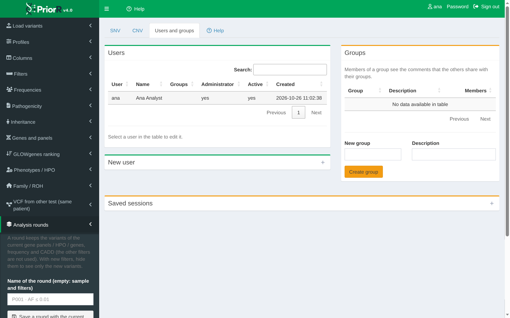
The Help tab (fig. 22) has the complete documentation and the configuration of the computer.
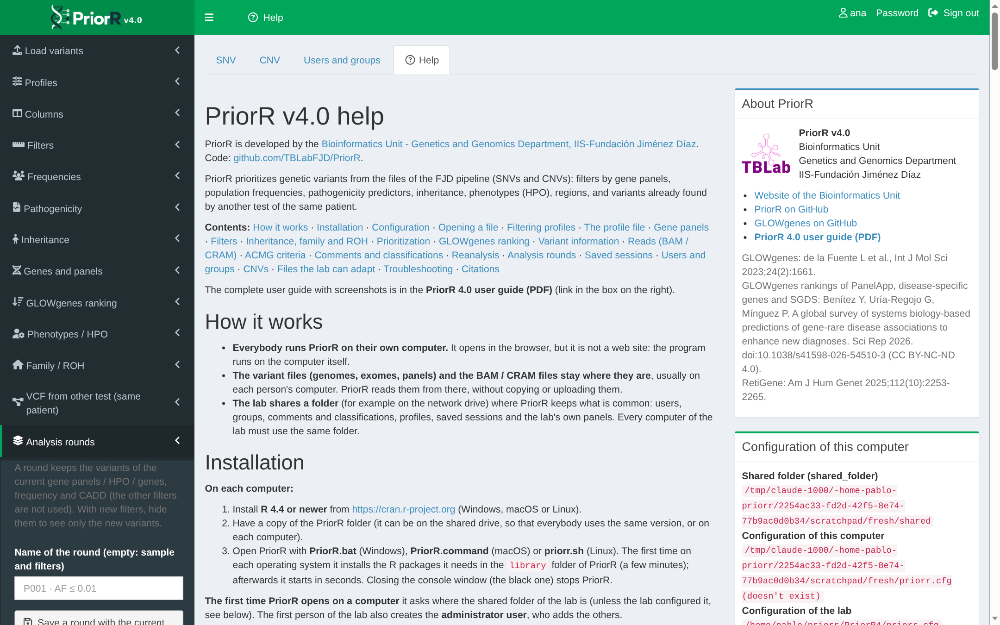
From the app/ folder (they need internet):
| Resource | Command |
|---|---|
| PanelApp (lab copy) | Rscript Program_files/scripts/update_panels.R |
| HPO | Rscript Program_files/scripts/update_hpo.R |
| gnomAD gene constraint | Rscript Program_files/scripts/update_constraint.R |
| AlphaMissense (once, ~640 MB) | Rscript Program_files/scripts/get_alphamissense.R |
| ClinVar missense (PS1 / PM5) | Rscript Program_files/scripts/update_clinvar_missense.R |
| RetiGene | Rscript Program_files/scripts/import_retigene.R |
Other files the lab can adapt: Program_files/profiles/*.json (built-in profiles), links.tsv (external
links), glowgenes.json (filters of the GLOWgenes view).
http://127.0.0.1:8484; when a second PriorR is open, the next port (8485...).genome_build of the files..bam is really in the folder (sometimes only the .bai / .md5 were copied).docker group.